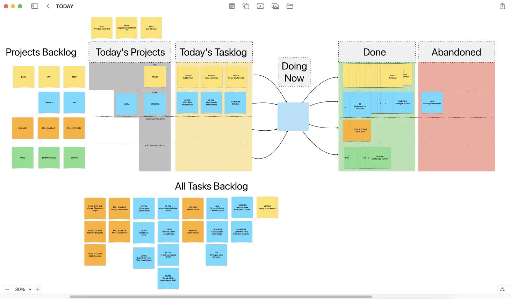

Task A:
Plan and sketch a potential final project.
Task B:
Perform a step-by-step Git tutorial. Build a personal site in the class repository describing yourself and your final project.
Let’s see how I can explain this… I’ll explain another day.
I never knew how to type properly, although I always wanted to learn. While working at the Fab15 organization in Egypt, I noticed that Sherry Lassiter types incredibly fast. That was the moment I decided to learn. There’s an advantage when you learn something from scratch; you don’t have any bad habits. So, I didn’t learn the QWERTY system, which was originally designed to prevent typewriters from jamming. Instead, I learned the Colemak system. Colemak is designed so that the most used letters in the English language are on the home row. I have an ortholinear keyboard on which I’ve applied the Colemak layout, and I practice about five minutes a day. What I like most about Colemak is that the backspace key is to the left of the ‘A’ key.
I also have macOS software that changes my keyboard layout to Colemak and also swaps the function of the caps lock key for backspace.
My intention is to use only a command-line text editor. I know a bit
about vim and I want to get deeper into it. I love the idea
of using only the keyboard for text editing. To avoid the temptation of
using Visual Studio Code, I’ve uninstalled it. The vim text editor is
quite sparse by default. So, I’m going to install some plugins. This is
a list that I will expand over time:
Other useful links:
I need to be realistic. I don’t have much free time, and soon I’ll have even less. So, I need a system to write documentation efficiently. I’m going to try a new technique for documenting that will allow me to have documentation in two (or more) languages. Right now, most of the text you’re reading is being dictated in Spanish to my Mac.

This saves me some time when it comes to writing. Some parts, like the code, I have to type manually. I also have to make manual corrections, for example, when including links.
This way, I’m generating Markdown files with the documentation in
Spanish. The file name for each week encodes the week I’m in and the
language of the documentation. In this case: w01-es.md. The
problem is that the documentation has to be in English. The reason why I
don’t dictate directly in English is that my accent is so bad that the
computer does not understand me. To solve that problem, I’m going to use
artificial intelligence to translate the text of that file into English
and also into German. I will save the files as w01-en.md
and w01-de.md respectively. The artificial intelligence
model has to be capable of recognizing Markdown syntax and being able to
respect it. It will also have to manipulate internal links, because
links going to w02-es.md in the Spanish documentation have
to be changed to w02-en.md in the English version of the
documentation. It’s possible that the model improves (or even changes)
throughout Fab Academy. That’s why I’ll keep the text in Spanish and
re-run the translation of all files each week. I will only edit the
original file in Spanish. I will not manually manipulate the generated
translation. So, if what you read in English or German doesn’t make
sense, blame OpenAI or whatever model I’m using.
I asked César Garcia, from La Hora Maker, to help me find a model for translation. César recommended using OpenAI’s Whisper API, capable of translating directly from Spanish audio. For now, I’m only interested in translation, so I’ve created an assistant in the OpenAI API with these instructions:
Translate the text from Spanish to English, Read the entire document to grasp context before translating it, take into account nuances and idioms of the Spanish language and translate them to the equivalents in English. The translation should not be literal, focus on maintaining the original meaning and provide a translation that makes sense in English. Ignore external URLs and code snippets in the translation; if encountering a markdown link, translate the text inside square brackets. Modify internal markdown link URLs to point to the appropriate English file, e.g., change w01-es.md to w01-en.md. Recognize and retain brands and names without translation. Use correct grammar and syntax in the final text. The style of the translation should be informal.
I have another model in German with similar instructions. I’ve been changing the instructions now and then, trying to improve the translation.
This page you’re reading has about 3600 tokens. You can find out how many tokens a text has using the OpenAI Tokenizer. The cost to translate this page into two languages is approximately 0.29 USD, considering that each 1000 tokens cost 0.01 USD for the input and 0.03 USD for the output. It seems quite expensive, and the cost will increase as Fab Academy progresses. For that reason, I’ll only translate contents when I consider the work advanced.
In my wishlist, I’ll keep looking for a local model. That way, I
could translate contents more frequently. For now, I’ve been testing the
Phi 2 and Yarn Mistral models with disastrous
results.
At first, I was using the OpenAI API window. Now I’ve automated this process using Python on the command line. Using a mix of Bing Copilot and the free version of ChatGPT, I requested a program that automates translation using the OpenAI library. But it didn’t go well. After quite a bit of back and forth (AI doesn’t usually generate correct code on the first try), I ended up frustrated and insulting Bing.

In the end, I had to read the API documentation to make the program work.
To avoid unnecessary costs, the script only translates Spanish
Markdown files that I’ve added using git add. Thanks to
this, I can control the cost. Once done, I simply run
python translate-en.py and the script generates the
Markdown pages translated into English. I do the same for German.
In reality, I usually don’t do the translation separately because I’ve included it in the next step.
Fab Academy documentation must be presented in the form of a web
page. To generate HTML pages from the markdown files, I’ve converted a
Bash script that I made for the educational program FabZero to Python. The
code converts all .md files into .html using
Pandoc with a CSS style template. During conversion, if it finds a
link to a markdown document, it converts it into a link to its
corresponding HTML document using this
LUA filter.
Optionally, the script also automates the translations to English and German and the uploading of files to Github. So, when I want to upload my progress I write:
python auto.py --translate updating week 1
And that way, the script translates the pages if it finds
--translate among the arguments. It also converts all pages
to HTML and then uploads everything to Github as long as there’s a
message, which in this case is updating week 1. If there’s
no message, none of the processes related to git are performed.
You can check the script here: auto.py
Let’s see what I have so far on Github:
.md files in Spanish.md files in English and German.html pages of all .md files generated
by Pandoc.The only thing left now is a web server. And you can do that from Github by accessing the repository settings.

This will create a file in .github/workflows/static.yml,
which I only had to modify the runner, because
runs-on: ubuntu-latest didn’t work. I changed it to
runs-on: ubuntu-22.04 and upon committing, the pages were
automatically served.
https://thebeachlab.github.io/backtofabacademy2024/
All of this is making writing documentation a bit slow at the moment, and a bit tedious. But I believe with this system, the speed is going to increase drastically week by week and in the end, I’ll be able to document quickly and with great detail.
Additionally, I believe this method will help many people who cannot express their talent because they don’t master another language. It’s unfair that should happen and I hope AI helps people to show how valuable they are.
Someone might think that because I’ve been using git for 10 years, I know everything there is to know about this version control system. Not at all. These are the things I want to improve during this cycle of Fab Academy:
(I might add more things throughout Fab Academy…)
I’d like to explain how I manage my projects. When you don’t have a boss, and nobody tells you what to do, you need to be very disciplined. Otherwise, you might fall into a negative spiral.
The most important thing is knowing where you’re going. Because if you don’t, you have a very serious problem. Sometimes you’ll find yourself lost in Fab Academy (and in life). You won’t know what you want to do, you won’t feel like doing anything, and it seems like you’re moving in slow motion while the world speeds by. In those moments, remember Phil Stutz. Invest in yourself: Exercise, reconnect with others, write your memories in a journal. It helps me and I’m convinced it will help you too. Soon, you’ll see your North Star. Set course for it.
The second is learning to reduce and simplify. One of your biggest problems in Fab Academy will be something like this: You can’t find a photo you’re sure you had. You don’t know if it’s on your phone’s photos, in Google Drive, or on a USB drive, if you transferred it to your computer, or someone sent it to you on WhatsApp… Simplify. Reduce.
And lastly, and I believe most importantly, the real secret to achieving anything, no matter how difficult, is to progress by taking many small steps. You solve one small problem, then another, and then another one. That’s how it works.
As for tools to help you manage, I’ve tried a few. So, I’ll start with the ones that don’t work for me:
Now I’m using a combination of plain text for long-term goals,
reminders for medium-term goals, and Apple’s Freeform for tasks I’m
going to do today. Freeform is an infinite canvas program, similar to Miro. It has the advantages of sticky notes
without their drawbacks. I can customize it and create my own system.
For example, I’ve created the DOING NOW box where only one
note fits. For me, this is important because I can only do one thing at
a time. I can also draw by hand and I like that. I will probably make a
video explaining everything in more detail.

Everything related to the final project has been moved to its corresponding section.